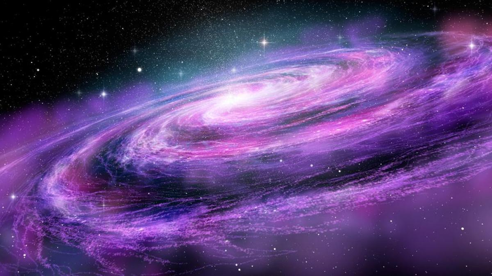

El universo es la totalidad de todas las formas de materia, energía, espacio-tiempo y leyes físicas que las rigen. Sin embargo, el término también se utiliza en sentidos contextuales ligeramente diferentes y alude a conceptos como cosmos, mundo, naturaleza o realidad.1 Su estudio, en las mayores escalas, es el objeto de la cosmología, disciplina basada en la astronomía y la física, en la cual se describen todos los aspectos de este universo con sus fenómenos.
Las ciencias físicas modelizan el universo como un sistema cerrado que contiene energía y materia adscritas al espacio-tiempo y que se rige fundamentalmente por principios causales. Basándose en observaciones del universo observable, los físicos intentan describir el continuo espacio-tiempo en el que nos encontramos, junto con toda la materia y energía existentes en él.
El hecho de que el universo esté en expansión se deriva de las observaciones del corrimiento al rojo realizadas en la década de 1920 y que se cuantifican por la ley de Hubble. Dichas observaciones son la predicción experimental del modelo de Friedmann-Robertson-Walker, que es una solución de las ecuaciones de campo de Einstein de la relatividad general, que predicen el inicio del universo mediante un big bang.
El "corrimiento al rojo" es un fenómeno observado por los astrónomos, que muestra una relación directa entre la distancia de un objeto remoto (como una galaxia) y la velocidad con la que este se aleja. Si esta expansión ha sido continua a lo largo de la vida del universo, entonces en el pasado estos objetos distantes que siguen alejándose tuvieron que estar una vez juntos. Esta idea da pie a la teoría del Big Bang; el modelo dominante en la cosmología actual.
Una pregunta importante abierta en cosmología es la forma del universo. Matemáticamente, ¿qué 3-variedad representa mejor la parte espacial del universo?
Si el universo es espacialmente plano, se desconoce si las reglas de la geometría Euclidiana serán válidas a mayor escala. Actualmente muchos cosmólogos creen que el Universo observable está muy cerca de ser espacialmente plano, con arrugas locales donde los objetos masivos distorsionan el espacio-tiempo, de la misma forma que la superficie de un lago es casi plana. Esta opinión fue reforzada por los últimos datos del WMAP, mirando hacia las "oscilaciones acústicas" de las variaciones de temperatura en la radiación de fondo de microondas.14

| Astrologia | 3204439229 | @jeanparracabal1 |